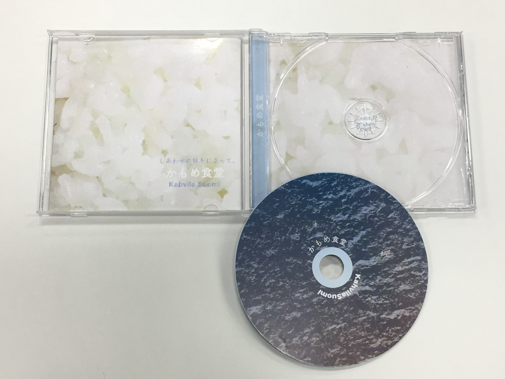
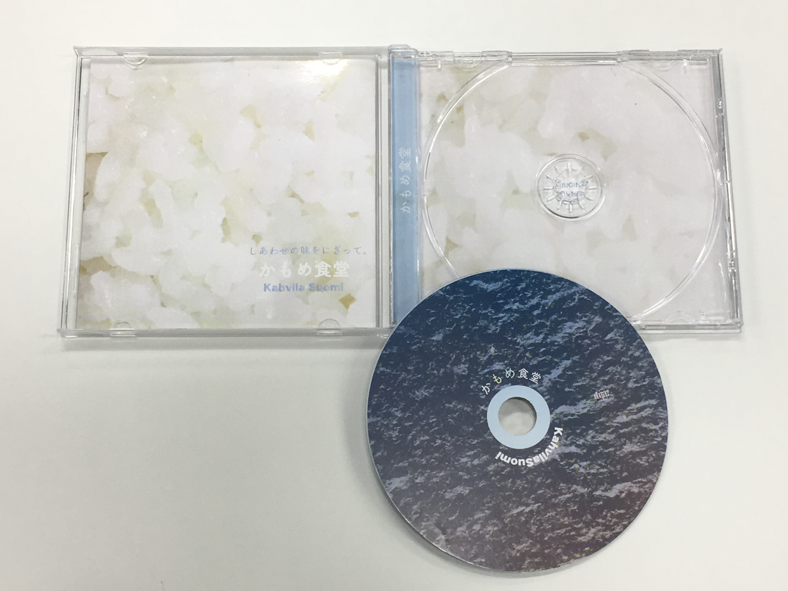

Works
これまでの制作事例を紹介
DESIGN
カルチャースポットを記事にした大学内発行冊子
「カルスポ探検へようこそ」表紙・エディトリアルデザイン
フランツ・カフカ「変身」ブックカバーとポスターデザイン

 

かもめ食堂をイメージしたポスター・サウンドトラックジャケットデザイン
焼き海苔をスキャンして作りました
Web
Webサイト関連
4年間所属・運営したパフォーマンスサークルの紹介ページを制作
▶︎http://wapjug.starfree.jp/
PC/タブレット/スマートフォン
和光大学芸術学科公式サイト内コンテンツバナーデザイン
サトヤマアートサンポ2017 ▶︎http://www.wako.ac.jp/art/satoyama/ コーディング担当
和光大学卒業制作展「Calor」 ▶︎http://www.wako.ac.jp/artex/ コーディング担当
OTHERS
趣味のイラスト・アートなど

グループ制作冊子「植物から作られる 日本の伝統色」ページレイアウトデザイン、イラスト

大学内図書館企画本棚「怪奇本棚」アートポスター
暑い夏の現実逃避
ハミガキ妖精・ハミィ